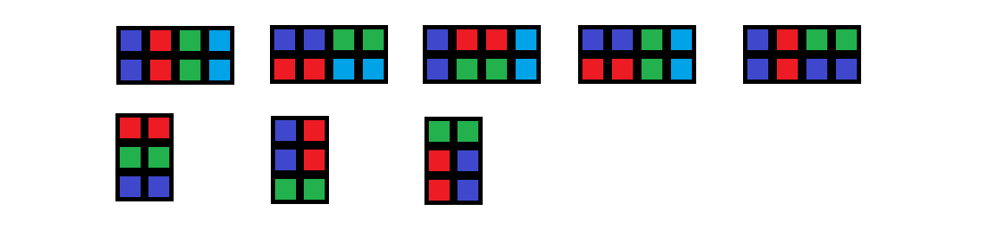

地灾军团的军师黑袍从潜伏在精灵高层的密探手中得知了神杖的情报，他对奥术宝石中蕴含的远古神秘力量十分感兴趣。他设计夺取了数块奥术宝石，并命令作为地灾军团首席科学家的你带领手下的研究人员全力破解。经过了一个月的艰苦尝试，你的研究团队终于破译了「2」型奥术宝石和「3」型奥术宝石的内部能量结构。
这两类结构有着一定的相似性，它们的内部具有 $k$ 个反应核心，「2」型奥术宝石的每个核心都可以看成是一个 $2 \times n$ 的网格，而「3」型奥术宝石的每个核心都可以看成是一个 $3 \times n$ 的网格。(注意奥术宝石的 $k$ 和 $n$ 可能不同) 当神力反应进行时，每个核心自动填充满神力颗粒。
形式化地描述，每个神力颗粒可以看成是一个 $1 \times 2$ 横置或竖置的方格，核心填满的定义为每个网格都恰好被一某个方格覆盖。若在两种填满反应核心的方案中存在一个方格放置的位置或方式不同，就认为方案不同。
如填满 $2 \times 4$ 的网格有 $5$ 种不同的方案，填满 $3 \times 2$ 的网格有 $3$ 种不同的方案。
如果奥术宝石的 $k$ 个核心的填充方式互不相同，它们就会组合出强大的咒术。黑袍想知道对于某个宝石一共有多少种不同的咒术 (对于两种咒术组合，如果第一种咒术中每个核心 $a$ 的填充方式都可以找到第二种咒术的某个核心 $b$，使得 $a$ 和 $b$ 的填充方式完全相同，则认为这两种咒术组合相同)。
对于宽度为 $n$、反应核心个数为 $k$ 的「2」型奥术宝石，设不同的咒术为 $F \left( n, k \right)$；
对于宽度为 $n$、反应核心个数为 $k$ 的「3」型奥术宝石，设不同的咒术为 $G \left( n, k \right)$。
例如 $F \left( 4, 1 \right) = 5, F \left( 4, 2 \right) = 10, G \left( 2, 2 \right) = 3$。
地灾军团的科技水平还不能精准测量反应核心的长度 $n$，只能确定出核心长度的大致范围 $\left[ l, r \right]$。你需要计算出反应核心长度在此区间内的平均咒术数，即
$$ \mathrm{ans}_2 = \frac 1 {r - l + 1} \sum_{n=l}^r F \left( n, k \right) $$ $$ \mathrm{ans}_3 = \frac 1 {r - l + 1} \sum_{n=l}^r G \left( n, k \right) $$
设最终答案的形式为 $\dfrac AB$，输出 $A \times B^{-1} \bmod 998244353$ 的结果，其中 $B^{-1}$ 是 $B$ 在 $998244353$ 下的乘法逆元。
第一行包含两个正整数 $T, m$ ($T = 1; m \in \left\{ 2, 3 \right\}$)，表示数据组数和奥术宝石的类型。
接下来 $T$ 行，每行三个正整数 $l, r, k$ ($1 \leq l \leq r \leq 10^{18}; 1 \leq k \leq 501; 998244353 \nmid r - l + 1$)，表示核心长度的范围与核心数量。
对于每组数据，输出一行一个整数，为 $\mathrm{ans}_m$ 的值。
设用骨牌 ($1 \times 2$ 的方格) 填充 $2 \times n$ 的网格的方案数为 $f_n$，填充 $3 \times 2 n$ 的网格的方案数为 $g_n$ (对于 $m = 3$ 的情况下宽度 $n$ 必须是偶数，否则奇偶分析即得矛盾)。
设生成函数 $\displaystyle F \left( x \right) = \sum_{n \geq 0} f_n x^n, G \left( x \right) = \sum_{n \geq 0} g_n x^n$，则由《具体数学》第 268 ~ 274 页内容可知，$$ F \left( x \right) = \frac 1 {1 - x - x^2}, G \left( x \right) = \frac {1 - x} {1 - 4 x + x^2} $$
通过将生成函数拆成部分分式的方法，可得：$$ f_n = \frac {5 + \sqrt 5} {10} \left( \frac {1 + \sqrt 5} 2 \right)^n + \frac {5 - \sqrt 5} {10} \left( \frac {1 - \sqrt 5} 2 \right)^n $$ $$ g_n = \frac {3 + \sqrt 3} 6 \left( 2 + \sqrt 3 \right)^n + \frac {3 - \sqrt 3} 6 \left( 2 - \sqrt 3 \right)^n $$
可以看出，这两个数列都可以表示成 $a_n = c_1 \lambda_1^n + c_2 \lambda_2^n$ 的形式。
由题意，题中给的 $F \left( n, k \right) = \dbinom {f_n} k, G \left( n, k \right) = \dbinom {g_n} k$，稍稍使用前缀和转化一下，就把问题变成了给定 $n$，求 $\displaystyle \sum_{i=0}^n \dbinom {a_i} k$ 的值。
由于 $k$ 不大，因此这个组合数可以看成一个 $k$ 次多项式，而且是一个关于 $a_n$ 的下降幂。不过由于通项中 $a_n = c_1 \lambda_1^n + c_2 \lambda_2^n$，因此我们更倾向于用一般幂去表达。因此，使用第一类 Stirling 数将 $a_n^{\underline k}$ 转成一般幂后，问题就进一步化为求 $\displaystyle \sum_{i=0}^n a_i^k$ 的值了。
代入公式，进行和式变换，可得：\begin{align*} & \sum_{i=0}^n a_i^k \\ =& \sum_{i=0}^n \left( c_1 \lambda_1^i + c_2 \lambda_2^i \right)^k \\ =& \sum_{i=0}^n \sum_{j=0}^k \binom kj c_1^{k-j} c_2^j \lambda_1^{i \left( k - j \right)} \lambda_2^{i j} \\ =& \sum_{j=0}^k c_1^k \left( \frac {c_2} {c_1} \right)^j \binom kj \sum_{i=0}^n \left( \lambda_1^k \left( \frac {\lambda_2} {\lambda_1} \right)^j \right)^i \end{align*}
注意到右边的求和是一个关于 $\lambda1^k \left( \dfrac {\lambda_2} {\lambda_1} \right)^j$ 的一个等比数列的求和，因此是 $O \left( \log n \right)$ 的，因此整个式子的求和可以在 $O \left( k \log n \right)$ 时间内完成。
加上外层的一个 $k$，时间复杂度就是 $O \left( k^2 \log n \right)$ 的。
最后的一个小问题就是根号怎么处理。由于 $3, 5$ 在模 $998244353$ 意义下都不是二次剩余，因此不能用一个整数来替代，故我们需要将数域扩张到 $\mathbb F_{998244353^2}$，并任取一个 $\mathbb F_{998244353^2}$ 上的不可约多项式，比如 $x^2 - 3$ 的根作为第二维度的单位 $\mathrm i$。
于是，$\sqrt 3, \sqrt 5$ 就均可以表示成 $a + b \mathrm i$ 的形式了，其中 $a, b \in \mathbb F_{998244353}$。
由于 $\mathbb F_{998244353^2}$ 是一个域，因此加减乘除等运算都是良定义的。由有限域中的 Fermat 小定理，域中元素的逆满足 $a^{-1} = a^{\left| F \right| - 2} = a^{mod^2 - 2}$。
总时间复杂度仍为 $O \left( k^2 \log n \right)$。
#include <bits/stdc++.h>
#define templated template <typename T>
typedef long long ll;
const int N = 540, mod = 998244353, pmod = mod - 1;
inline int & reduce(int &x) {return x += x >> 31 & mod;}
inline ll & reduce(ll &x) {return x += x >> 63 & mod;}
inline int plus(int x, const int y) {return x += y - mod, reduce(x);}
inline int minus(int x, const int y) {return x -= y, reduce(x);}
ll PowerMod(ll a, ll n, ll c = 1) {for (a %= mod, n %= pmod, n += n >> 31 & pmod; n; n >>= 1, a = a * a % mod) if (n & 1) c = c * a % mod; return c;}
// Finite Field of size 998244353^2, use polynomial x^2 - 3
struct GF {
int a, b;
GF (int _a = 0, int _b = 0) : a(_a), b(_b) {}
inline GF operator + (const GF &B) const {return GF(plus(a, B.a), plus(b, B.b));}
inline GF operator - (const GF &B) const {return GF(minus(a, B.a), minus(b, B.b));}
inline GF operator * (const GF &B) const {return GF(((ll)a * B.a + 3ll * b * B.b) % mod, ((ll)a * B.b + (ll)b * B.a) % mod);}
inline GF operator / (const GF &B) const {return *this * B.inv();}
inline GF & operator += (const GF &B) {return *this = *this + B;}
inline GF & operator -= (const GF &B) {return *this = *this - B;}
inline GF & operator *= (const GF &B) {return *this = *this * B;}
inline GF & operator /= (const GF &B) {return *this = *this / B;}
inline GF operator ^ (ll n) const;
inline GF inv() const {return *this ^ ((ll)mod * mod - 2);}
inline bool operator == (const GF &B) const {return a == B.a && b == B.b;}
} c, d, cd, u, v, uv;
templated T Power(T a, ll n, T c = 1) {for (; n; n >>= 1, a *= a) if (n & 1) c *= a; return c;}
inline GF GF::operator ^ (ll n) const {return Power<GF>(*this, n);}
inline GF Geometric(const GF &a, ll n) {return a == GF(1) ? n % mod : (GF(1) - (a^n)) / (GF(1) - a);}
int fact[N], finv[N], S[N][N];
void init() {
int i, j;
for (*fact = i = 1; i < N; ++i) fact[i] = (ll)fact[i - 1] * i % mod;
--i, finv[i] = PowerMod(fact[i], -1);
for (; i; --i) finv[i - 1] = (ll)finv[i] * i % mod;
for (**S = i = 1; i < N; ++i)
for (j = 1; j <= i; ++j)
S[i][j] = (S[i - 1][j] * (i - 1ll) + S[i - 1][j - 1]) % mod;
}
inline ll C(int n, int r) {return (ll)fact[n] * finv[r] % mod * finv[n - r] % mod;}
// sum a(i)^k where a(i) = c u^i + d v^i, i = 0 .. n
int compute(ll n, int K) {
GF E = c^K, U = u^K, ret(0, 0);
for (int k = 0; k <= K; ++k, E *= cd, U *= uv) ret += E * Geometric(U, n + 1) * C(K, k);
return assert(!ret.b), ret.a;
}
// sum C(a(i), k) where a(i) = c u^i + d v^i, i = 0 .. n
int solve(ll n, int K) {
int i, c; ll ret = 0;
for (i = 1; i <= K; ++i) c = (ll)S[K][i] * compute(n, i) % mod, (i ^ K) & 1 ? ret -= c : ret += c;
return reduce(ret %= mod) * finv[K] % mod;
}
int main() {
int T, K, type, ans; ll l, r; init();
scanf("%d%d", &T, &type);
if (--type == 2)
c = GF(499122177, 166374059),
d = GF(499122177, 831870294),
cd = GF(2, 998244352),
u = GF(2, 1),
v = GF(2, 998244352),
uv = GF(7, 998244349);
else
c = GF(499122177, 844646956),
d = GF(499122177, 153597397),
cd = GF(499122178, 767986985),
u = GF(499122177, 230257368),
v = GF(499122177, 767986985),
uv = GF(499122175, 230257368);
for (; T; --T)
scanf("%lld%lld%d", &l, &r, &K),
reduce(ans = solve(r / type, K) - solve(--l / type, K)),
printf("%lld\n", PowerMod(r - l, -1, ans));
return 0;
}
坑1：对于等比数列的求和，还是不要忘记公比为 $1$ 的情况哦！
坑2：由于有限域 $\mathbb F_{998244353^2}$ 中的运算相对复杂一些，因此一些取模等细节不要漏做了。